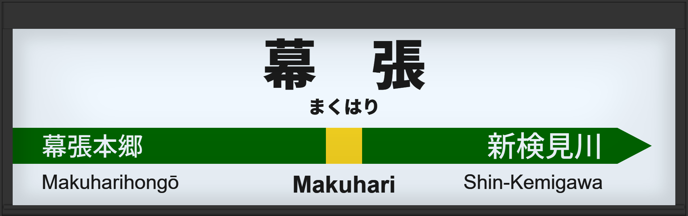

| ←幕張本郷 | ■ 中央・総武線(各駅停車) | 稲毛→ |
|---|
1999年6月に初期型ATOS放送を導入。
2007年頃には旧型に更新。
2014年3月に常磐改良型に更新される。
2017年10月には宇都宮型に更新され、津田英治氏から田中一永氏に交代している。
| 1 | ■ 中央・総武線(各駅停車) 三鷹方面 |
1番線接近放送 1番線到着放送 |
放送は「」です。 初期型でした。 |
|---|---|---|---|
| 2 | 2番線接近放送 2番線到着放送 |
放送は「」です。 初期型でした。 |
|
| 3 | ■ 中央・総武線(各駅停車) 千葉方面 |
3番線接近放送 3番線到着放送 |
放送は「」です。 初期型でした。 |
| 4 | 4番線接近放送 4番線到着放送 |
放送は「」です。 初期型でした。 |